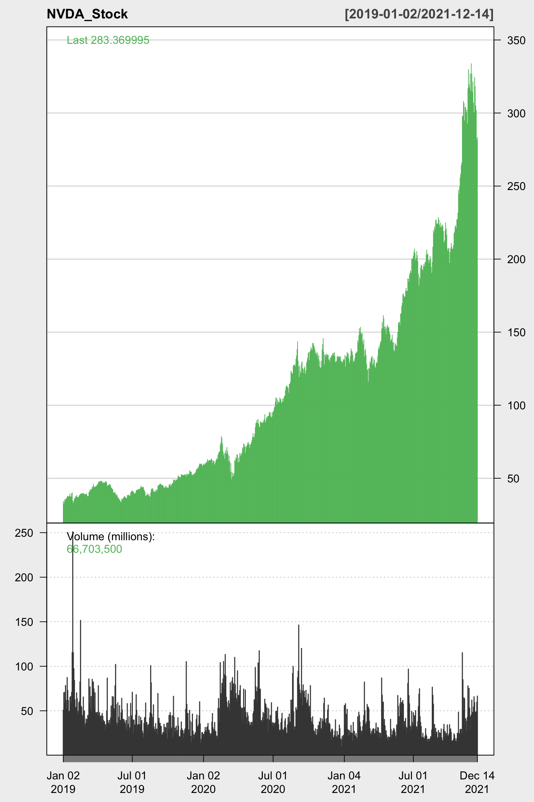
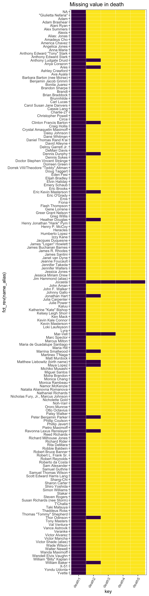
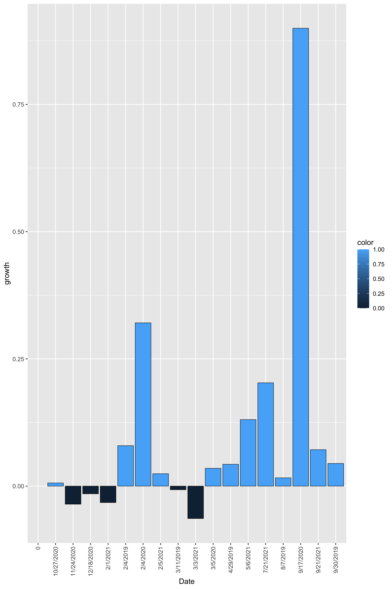
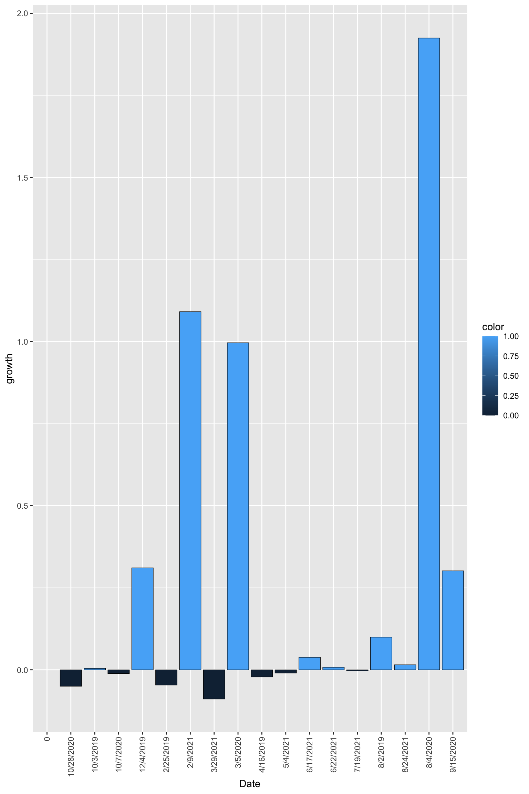
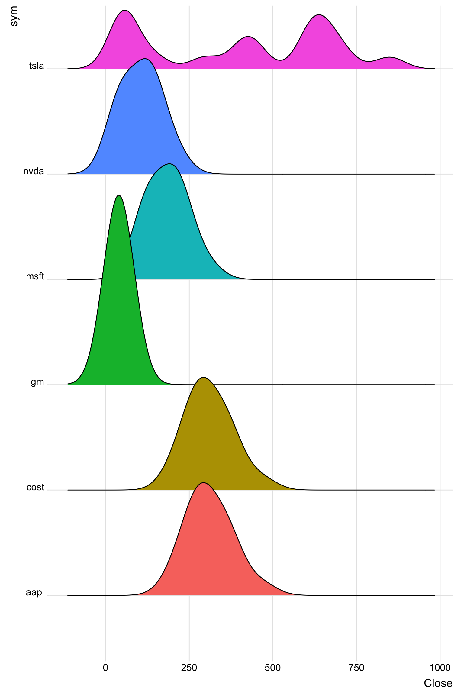
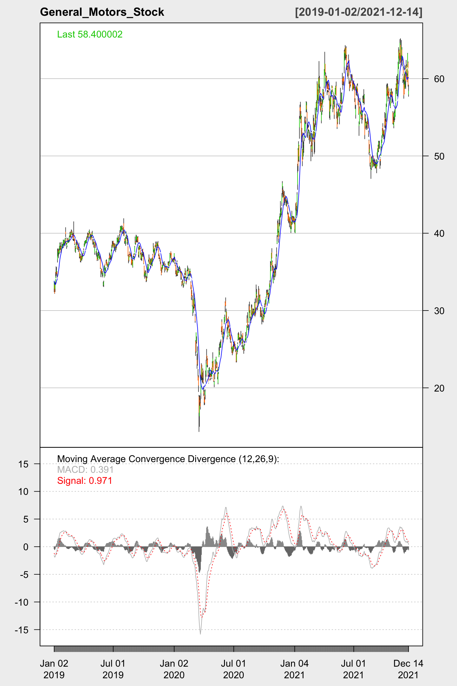
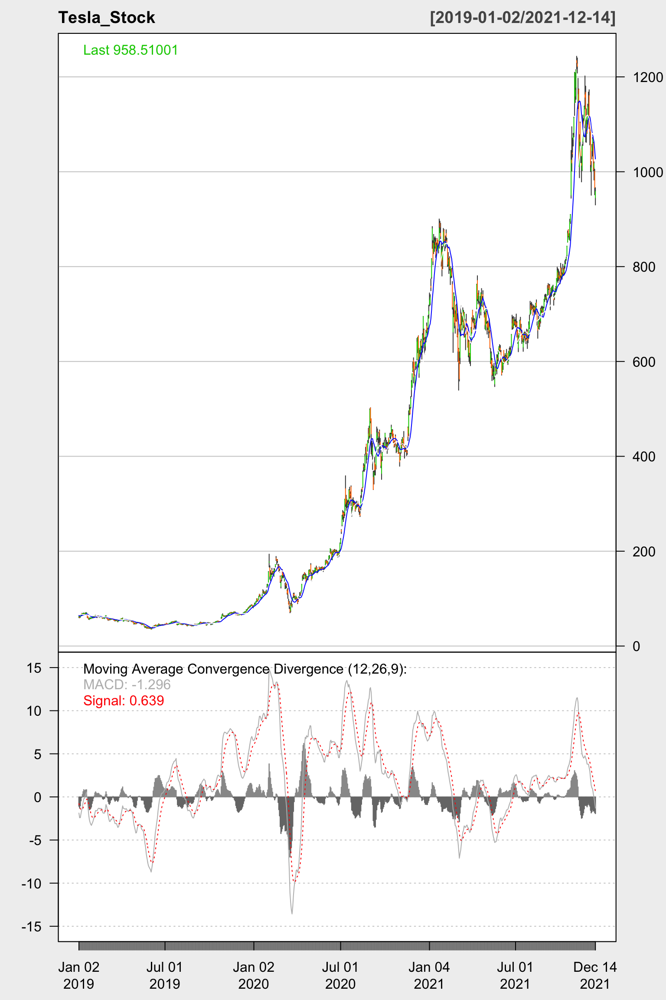
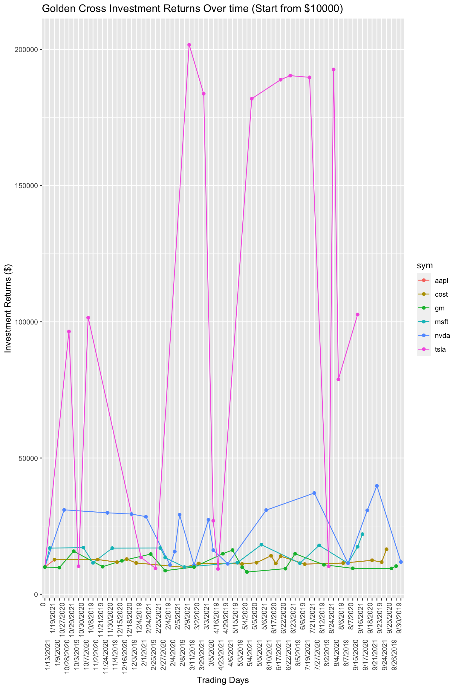
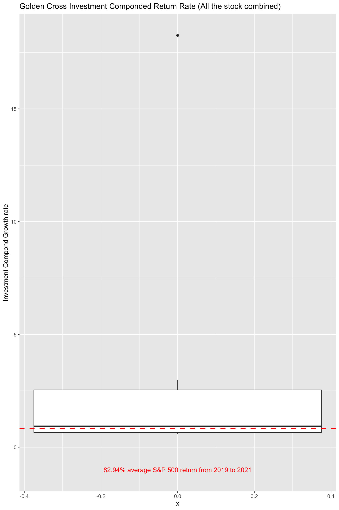

Chapter 5 Results
The following packages are needed for the visualization:
The price data would be acquired from yahoo finance using quantmod package
The plot above is a static cumulative market value plot for Apple. The plot includes price data from 2019-01-01 to 2021-12. At the bottom of the plot, the trading volume of the stock for each recorded trading days are demonstrated in the form of histogram. No clear type of distribution of the volume can be easily identified due to the volatile nature of the stock market. Possible inflex and efflux might be found near the day when Apple announces its quarterly sales report or the day when a new Iphone product goes public.
The plot above is a static cumulative market value plot for General Motor. The plot includes price data from 2019-01 to 2021-12. At the bottom of the plot, the trading volume of the stock for each recorded trading days are demonstrated in the form of histogram. No clear type of distribution of the volume can be easily identified due to the volatile nature of the stock market. Possible inflex and efflux might be found near the day when General Motor announces its quarterly sales report. The inflation might also have an effect on the stock price of GM if the price of the raw material go up.
The plot above is a static cumulative market value plot for Tesla. The plot includes price data from 2019-01 to 2021-12. At the bottom of the plot, the trading volume of the stock for each recorded trading days are demonstrated in the form of histogram. No clear type of distribution of the volume can be easily identified due to the volatile nature of the stock market. Possible inflex and efflux might be found near the day when Tesla announces its quarterly sales report. Price could also change rapidly if a new Tesla model is published. The direction of the price changes might depend on the performance of the Tesla Press Conference. Tweets sent by Elon Musk might also have some effects on the stock prices.
The plot above is a static cumulative market value plot for Microsoft. The plot includes price data from 2019-01 to 2021-12. At the bottom of the plot, the trading volume of the stock for each recorded trading days are demonstrated in the form of histogram. No clear type of distribution of the volume can be easily identified due to the volatile nature of the stock market. Possible inflex and efflux might be found near the day when Microsoft announces its quarterly sales report. Insider trading that traced back to high executives in Microsoft and alleged or verified scandal of key officials of the Microsoft could exert negative influence on the stock prices.

The plot above is a static cumulative market value plot for Costco. The plot includes price data from 2019-01 to 2021-12. At the bottom of the plot, the trading volume of the stock for each recorded trading days are demonstrated in the form of histogram. No clear type of distribution of the volume can be easily identified due to the volatile nature of the stock market. Possible inflex and efflux might be found near the day when Costco announces its quarterly sales report. Inflation could exert significant influence on the stock prices as the rise of price of commodities would push up the total sales figure of the products.

The plot above is a static cumulative market value plot for Nvidia. The plot includes price data from 2019-01 to 2021-12. At the bottom of the plot, the trading volume of the stock for each recorded trading days are demonstrated in the form of histogram. No clear type of distribution of the volume can be easily identified due to the volatile nature of the stock market. Possible inflex and efflux might be found near the day when Nvidia announces its quarterly sales report. Tech trends such as Metaverse can positively influence the stock price of Nvidia as more buyers hold bullish views on the Tech company. Increasing demand for computational centers could also influence the stock price of Nvidia.

The plot above is a barchart demonstrating the growth rate of the investment in Apple using Golden Cross Method. Blue bar represents a positive growth while the black bar represents a decline. Within 17 trading days, the golden cross method achieves 9 growth increases. The size of most positive growth bar exceed the size of the negative ones.
The plot above is a barchart demonstrating the growth rate of the investment in Nvidia using Golden Cross Method. Blue bar represents a positive growth while the black bar represents a decline. Within 17 trading days, the golden cross method achieves 11 growth increases. The size of most positive growth bar exceed the size of the negative ones.
The plot above is a barchart demonstrating the growth rate of the investment in Microsoft using Golden Cross Method. Blue bar represents a positive growth while the black bar represents a decline. Within 14 trading days, the golden cross method achieves 7 growth increases. The size of most positive growth bars exceed the size of the negative ones.
The plot above is a barchart demonstrating the growth rate of the investment in General Motor using Golden Cross Method. Blue bar represents a positive growth while the black bar represents a decline. Within 17 trading days, the golden cross method achieves 7 growth increases. The size of most positive growth bars exceed the size of the negative ones.

The plot above is a barchart demonstrating the growth rate of the investment in Costco using Golden Cross Method. Blue bar represents a positive growth while the black bar represents a decline. Within 17 trading days, the golden cross method achieves 9 growth increases. The size of most positive growth bars exceed the size of the negative ones.

The plot above is a barchart demonstrating the growth rate of the investment in Tesla using Golden Cross Method. Blue bar represents a positive growth while the black bar represents a decline. Within 17 trading days, the golden cross method achieves 8 growth increases. The size of most positive growth bars exceed the size of the negative ones.

The plot above is a mosaic plot demonstrating the Investment Growth Movement on Various trading days. We can see that NVDA has the largest proportion of the trading days where the Golden Cross investment method produces a positive growth rate. Meanwhile, GM has the largest proportion of the trading days where the Golden Cross investment method produces a negative growth rate.
The piechart above shows that the Golden Cross method produces a positive growth rates roughly 1/9 of the total number of trading attempts. A trading attempt occur when a pair of adjacent buy and sell signals are produces by Golden Cross method. We can also concluded that the Golden Cross investing method has a 11% achieving positive growth on the selected stocks.
## Close
## 1 NA
## 2 197.81728
## 3 232.92447
## 4 239.84543
## 5 257.12659
## 6 275.16788
## 7 284.63593
## 8 283.53317
## 9 297.07532
## 10 296.57892
## 11 288.57501
## 12 324.28213
## 13 352.39987
## 14 366.64230
## 15 351.78568
## 16 381.67590
## 17 383.40985
## 18 466.99451
## 19 197.81728
## 20 232.92447
## 21 239.84543
## 22 257.12659
## 23 275.16788
## 24 284.63593
## 25 283.53317
## 26 297.07532
## 27 296.57892
## 28 288.57501
## 29 324.28213
## 30 352.39987
## 31 366.64230
## 32 351.78568
## 33 381.67590
## 34 383.40985
## 35 466.99451
## 36 NA
## 37 102.18226
## 38 122.83401
## 39 122.64883
## 40 131.85991
## 41 132.68040
## 42 155.64471
## 43 201.14137
## 44 206.50385
## 45 200.26263
## 46 212.29053
## 47 214.54164
## 48 227.60953
## 49 244.98415
## 50 304.66263
## 51 NA
## 52 59.75400
## 53 54.67200
## 54 46.86800
## 55 46.60600
## 56 66.60600
## 57 144.90800
## 58 297.39999
## 59 449.76001
## 60 425.29999
## 61 406.01999
## 62 849.46002
## 63 611.28998
## 64 673.59998
## 65 616.59998
## 66 623.71002
## 67 646.21997
## 68 708.48999
## 69 NA
## 70 37.06088
## 71 40.07337
## 72 44.59698
## 73 38.31408
## 74 43.38121
## 75 61.63444
## 76 68.19954
## 77 124.50470
## 78 133.82745
## 79 129.44205
## 80 132.62042
## 81 132.27068
## 82 135.80804
## 83 127.95142
## 84 145.17111
## 85 194.06578
## 86 212.46001
## 87 NA
## 88 36.97816
## 89 37.15052
## 90 37.60669
## 91 36.76232
## 92 33.88858
## 93 34.65722
## 94 30.33988
## 95 20.75000
## 96 26.37000
## 97 26.72000
## 98 29.00000
## 99 41.66000
## 100 52.90000
## 101 61.94000
## 102 57.53000
## 103 60.12000
## 104 54.43000 The ridge plot above demonstrates the distribution of Closing prices for each selected stock over years (2019 to 2021). As expected, the distribution of TSLA is multimodal due to the high volatility of the stock prices of TSLA. The distribution of the closing prices for the other stocks resemble the normal distribution. Apple has a set of overall higher closing prices comparing to the others while GM has an overall lower closing prices comparing to the other stocks.
The plot above is a static candlestick plot demonstrating the price movement of Apple with Moving Average lines and Moving Average Convergence Divergence indicator (MACD). The plot includes price data from 2019-01 to 2021-12. The Convergence and Divergence of the short term moving average and long term moving average can be visualized by the MACD indicator, which is useful for the execution of Golden Cross method.
The plot above is a static candlestick plot demonstrating the price movement of NVDA with Moving Average lines and Moving Average Convergence Divergence indicator (MACD). The plot includes price data from 2019-01 to 2021-12. The Convergence and Divergence of the short term moving average and long term moving average can be visualized by the MACD indicator, which is useful for the execution of Golden Cross method.

The plot above is a static candlestick plot demonstrating the price movement of GM with Moving Average lines and Moving Average Convergence Divergence indicator (MACD). The plot includes price data from 2019-01 to 2021-12. The Convergence and Divergence of the short term moving average and long term moving average can be visualized by the MACD indicator, which is useful for the execution of Golden Cross method.

The plot above is a static candlestick plot demonstrating the price movement of COST with Moving Average lines and Moving Average Convergence Divergence indicator (MACD). The plot includes price data from 2019-01 to 2021-12. The Convergence and Divergence of the short term moving average and long term moving average can be visualized by the MACD indicator, which is useful for the execution of Golden Cross method.
The plot above is a static candlestick plot demonstrating the price movement of MSFT with Moving Average lines and Moving Average Convergence Divergence indicator (MACD). The plot includes price data from 2019-01 to 2021-12. The Convergence and Divergence of the short term moving average and long term moving average can be visualized by the MACD indicator, which is useful for the execution of Golden Cross method.

The plot above is a static candlestick plot demonstrating the price movement of TSLA with Moving Average lines and Moving Average Convergence Divergence indicator (MACD). The plot includes price data from 2019-01 to 2021-12. The Convergence and Divergence of the short term moving average and long term moving average can be visualized by the MACD indicator, which is useful for the execution of Golden Cross method.
Golden Cross Investment Return:
The plot above is a line plot demonstrating the investment returns for different stocks using Golden Cross Method. The initial investment is $10000 for each stocks and we only buy the stock when a buy signal is created. We sell only when a sell signal is created. Buy and sell signals are created based on the following rules: if the short-term moving average line crosses the long-term moving average line from below, a buy signal is created. When the short-term moving average line crosses the long-term moving average line from above, a sell signal is created.
As shown in the plot, TSLA gives the greatest return while GM gives the least return. The volatility of TSLA is also much greater than the other stocks in the plot, as TSLA experiences rapid growth over the years.
 The above is a boxplot demonstrating the Golden Cross investment growth rates over the span of trading days. All the boxes are arranged by median in decreasing order. We can see that Nvidia has the highest median growth rates while the General Motor has the lowest growth rate, which explained the reason that the investment in General Motor increase the least in previous plot. TSLA has the most extreme outlier compared to all the other stocks, which accounts for the volatile investment return of TSLA in the previous plot.
The above is a boxplot demonstrating the Golden Cross investment growth rates over the span of trading days. All the boxes are arranged by median in decreasing order. We can see that Nvidia has the highest median growth rates while the General Motor has the lowest growth rate, which explained the reason that the investment in General Motor increase the least in previous plot. TSLA has the most extreme outlier compared to all the other stocks, which accounts for the volatile investment return of TSLA in the previous plot.

The plot above is a boxplot demonstrating the Golden Cross Investment Componded Return Rate for all the stocks. The red horizontal dash line represent the average S&P 500 growth from 2019 to 2021. The data of the actual return of S&P 500 over years comes from online Stock Broker. The lowest growth rate is 65% while the highest growth rate is 1826%. The median growth rate is slightly higher than the average growth rate of S&P 500 index funds. Since conventionally the S&P 500 index funds represent the performance of the general stock market, we can see that Golden Cross investment method outperform the general market returns when applied on the selected major stocks.